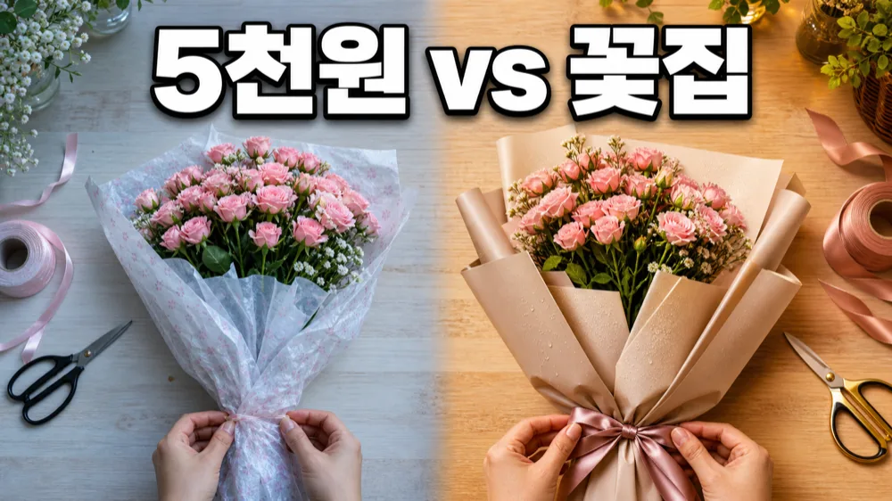
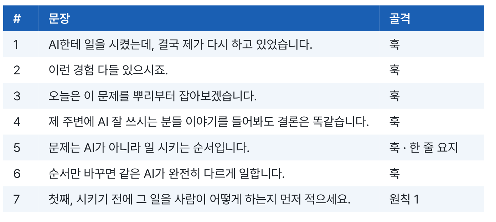
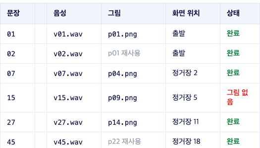

기획은 했는데
촬영할 대본이 안 나온다면
AI가 쓴 대본에
내 얘기를 넣는 법.

책을 읽고 내 작업에 적용하는 가이드
만든 곳의 운영 기록
실제 사업을 운영해 온
경험이 있습니다
(주)메이크프렌즈 연도별 매출
2021–2023 · 월별 매출 원장 합산
출처: (주)메이크프렌즈 월별 매출 원장
연도별 합계를 소수 첫째 자리로 표시
연도별 합계를 소수 첫째 자리로 표시
그럴듯한 문장은 받았는데
내가 말할 내용은
따로 있잖아요.
유튜브 대본 하나 써줘.내가 겪은 일과
고객이 묻는 것부터.
고객이 묻는 것부터.
책에서는 내 사업과 말투를 먼저 알려주고
내 경험을 대본 재료로 넣습니다.
매번 처음부터
설명하지 않도록.
📁 내 채널 작업 폴더
사업과 고객 정보
비서가 지킬 규칙
직접 겪은 사례와 말투
참고할 영상과 메모
AI가 모르는 내용은 질문하게 하고
내가 확인한 사실로 채워 갑니다.
제목을 고르고
한 장면으로
보여주세요.

책에 실린 꽃공방 썸네일 예시
제목과 인트로 후보를 비교하고
선택한 내용을 썸네일 지시서로 옮깁니다.
조회수를 약속하는 공식은 아닙니다.
처음부터 긴 영상 한 편 대신
내 기록에서
짧은 대본부터.

본책은 먼저 다섯 문장으로
제작 과정을 끝까지 돌아보라고 안내합니다.
고칠 때는 바꿀 문장을 짚어 주세요.
어디가 틀렸는지
찾을 수 있는 영상.

영상 제작 본책에 실린 매핑 시트
문장마다 음성과 그림을 연결하고
틀린 부분을 표시한 뒤 수정합니다.
전체를 다시 만드는 일을 줄이는 방식입니다.
AIMAX · 메이크패밀리
함께 공부하는 공간도
운영하고 있습니다
메이크패밀리 네이버 카페
12,127명

2026.09.10 카페정보 화면 기준
출처: 네이버 카페 westudyssat
출처: 네이버 카페 westudyssat
메이크패밀리 라운지
2,885명

2026.09.10 라운지 공개 화면에 표시된 인원
출처: 메이크패밀리 라운지 첫 화면
출처: 메이크패밀리 라운지 첫 화면
AI에게 맡겨도
내가 확인할 곳은 남아요.
01경험과 사실내가 겪지 않은 사례가 들어갔는지.
02음성·자막·장면같은 문장을 가리키고 있는지.
03최종 영상재생하면서 수정한 부분까지 확인했는지.
유튜브 비서 · AI 영상 직원
내 작업에 꺼내 쓰세요.
- 라운지에서 읽는 유튜브 비서 가이드
- 영상 제작 본책 PDF
- 별책 · 제작 중 대화 기록
110,000원
지금 받기 →결제한 이메일로 라운지에 로그인해
책과 구매한 자료를 확인하세요.
시작하기 전에
Q.
촬영도 전부 대신해 주나요?
완성 영상을 대신 만들어 드리는 상품은 아닙니다. 직접 경험을 넣고 AI와 나눠 작업하는 제작 과정을 설명합니다.
Q.
AI 도구 비용도 포함인가요?
도구 구독이나 생성 크레딧은 별도입니다. 사용하는 도구의 요금과 조건을 확인해 주세요.
Q.
별책은 어떤 내용인가요?
영상 제작 중 오간 대화 기록입니다. 지시하고 수정하는 방식을 본책과 함께 살펴봅니다.
이용 안내
이미지와 표는 실제 원문에 실린 예시입니다. AI의 답과 영상 결과는 직접 확인해 주세요. 도구 화면은 책 제작 시점과 달라질 수 있습니다. 실제 조회수·수익·제작 속도를 보장하지 않습니다.